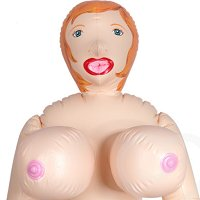
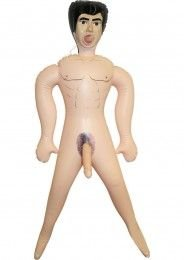

|
Секс-кукла — сексуальная игрушка, имитирующая полового партнёра. Имитируют женское или мужское тело человека, но встречаются и образцы, имитирующие тело животного (овца, корова, лошадь).
|
|
|  | Ультра-роскошная дама по имени Феодосия прямиком из 90-х удовлетворит все Ваши самые невообразимые желания |
| Топовая телочка в UHD 4k не даст Вам заскучать холодными зимними вечерами, но за нее Вам придётся продать Мазду и девелопировать ночи на пролёт |
|  | Ну а этого товарища зовут Валерий. Рекомендуем Вам приобретать Валеру, когда Вы уже испробовали всё в этом мире. Этот товарищ спасёт Вас от скуки в спальне. Этот мужчина никогда не устанет и будет вас радовать снова и снова. |
НЕ ПЕРЕКАЧИВАЙТЕ. Чтобы избежать чрезмерного наполнения, не используйте электрический компрессор. Вместо этого можно использовать ручной насос. Наполнить до 90% емкости куклы. Подождите в течение десяти минут, чтобы воздух смог равномерно распределиться внутри куклы до полного заполнения. Чем меньше воздуха внутри куклы, тем меньше давления будет находиться в ней во время использования.|
|